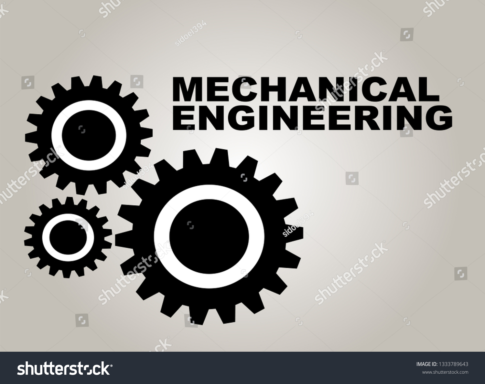

Branch Details
| Course |
Duration |
Intake |
| B.Tech |
4 years |
120 |
| M.Tech |
2 years |
60 |

Technically, mechanical engineering is the application of the principles and problem-solving techniques of engineering from design to manufacturing to the marketplace for any object. Mechanical engineers analyze their work using the principles of motion, energy, and force—ensuring that designs function safely, efficiently, and reliably, all at a competitive cost.
Mechanical engineers make a difference. That's because mechanical engineering careers center on creating technologies to meet human needs. Virtually every product or service in modern life has probably been touched in some way by a mechanical engineer to help humankind.
This includes solving today's problems and creating future solutions in health care, energy, transportation, world hunger, space exploration, climate change, and more.
Being ingrained in many challenges and innovations across many fields means a mechanical engineering education is versatile. To meet this broad demand, mechanical engineers may design a component, a machine, a system, or a process. This ranges from the macro to the micro, from the largest systems like cars and satellites to the smallest components like sensors and switches. Anything that needs to be manufactured—indeed, anything with moving parts—needs the expertise of a mechanical engineer.
Vision of the department
The philosophies brought forward in the vision of the University and the College of Engineering are incorporated in the Mechanical Engineering vision statement. This vision was created jointly with the Mechanical Engineering Industrial Advisory Council. The vision statement reads:
The vision of the Department of Mechanical Engineering is to be regionally, nationally and internationally recognized in providing mechanical engineering education, leading to well qualified engineers who are innovative, immediate contributors to their profession and successful in advanced studies.p>
Mision of the department
The mission of the Department of Mechanical Engineering is to educate, prepare, inspire, and mentor students to excel as professionals and to grow throughout their careers in the art, science, and responsibilities of engineering. This is accomplished by:
Providing the facilities and environment conducive to a high quality education, well grounding the students in the fundamental principles of engineering and preparing them for diverse careers;
Engaging in academic and scholarly activities, which strengthen the major’s regional, national, and international reputation.